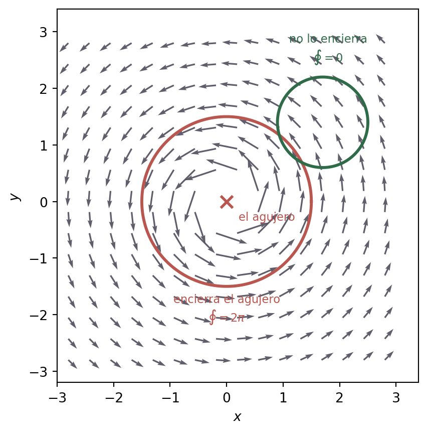

Todos los campos de la guía de la cátedra resultan conservativos. Eso es una elección didáctica razonable —así se practica la receta— pero deja una impresión falsa, porque en la práctica la mayoría de los campos vectoriales no tienen potencial, y en un parcial es perfectamente posible que la respuesta correcta sea “no existe tal campo escalar”.
Este capítulo es el contrapeso. Hay dos maneras distintas de que un campo no sea conservativo, y conviene no mezclarlas:
El rotor no es nulo. El campo falla el test. Es el caso fácil de detectar y el que aparece en Sección 3.1.
El rotor es nulo pero el dominio tiene un agujero. El campo pasa el test y aun así no tiene potencial global. Es el caso traicionero, y va en Sección 3.2.
3.1 El remolino: cuando el test falla
Tomemos el campo más simple posible con rotor no nulo:
\[
\vec G(x,y) = (-y,\ x).
\tag{3.1}\]
Cada flecha es perpendicular al vector posición y del mismo módulo: es el campo de velocidades de un disco que gira como cuerpo rígido con velocidad angular \(1\).
No coinciden, y el dominio es todo \(\mathbb{R}^2\). Entonces \(\vec G\) es no conservativo, y ahí se termina: no existe ninguna función potencial. Esa es la respuesta completa, y la cuenta de dos renglones que la justifica es toda la demostración que hace falta.
3.1.1 Qué pasa si uno insiste con la receta
Vale la pena ver el choque de frente, porque es exactamente el síntoma que hay que reconocer si uno se saltea el test. Integramos \(P\) respecto de \(x\):
Y eso es imposible: el lado izquierdo es una función de \(y\) sola y el derecho depende de \(x\). No hay ningún \(g\) que arregle esto.
ImportanteLa señal, en una línea
Si al hacer el paso 4 te queda un \(g'(y)\) que depende de \(x\), hay exactamente dos posibilidades: o te equivocaste en la integral del paso 3, o el campo no es conservativo. El test del paso 2 es el que distingue una cosa de la otra, y por eso se hace primero.
3.1.2 La consecuencia que se ve: la vuelta no cierra
Sobre la circunferencia \(\vec r(t) = (\cos t, \operatorname{sen} t)\), \(t \in [0, 2\pi]\), con \(d\vec r = (-\operatorname{sen} t, \cos t)\, dt\):
Sobre una circunferencia de radio \(R\) la cuenta da \(2\pi R^2\), que es lo mismo que predice Green: \(\iint_{\Omega} 2 \, dA = 2 \pi R^2\).
Dar una vuelta completa y acumular trabajo positivo es imposible si las flechas fueran la pendiente de un relieve: no se puede volver al punto de partida habiendo subido todo el tiempo. Eso es la escalera imposible de Escher, y es la razón de fondo por la que no hay potencial.
Figura 3.1: Arriba: dos campos y una misma circunferencia recorrida en sentido antihorario. Abajo: el trabajo acumulado a lo largo de la vuelta. El campo conservativo sube y baja, y vuelve exactamente a cero —el punto de llegada es el de partida y la altura es la misma—. El remolino empuja siempre a favor del recorrido y acumula sin parar hasta \(2\pi \approx 6{,}283\). Esa diferencia entre volver a cero y no volver es, gráficamente, toda la definición de campo conservativo.
Con remolino = 0 el campo es el conservativo del capítulo anterior; con
remolino = 1 es \(\vec G = (-y,x)\). El trabajo se calcula numéricamente sobre el arco
recorrido. Fijate en dos cosas: en el campo conservativo el trabajo sube y baja pero cierra
en cero para cualquier radio; en el remolino la vuelta completa da \(2\pi R^2\), que
crece con el área encerrada, exactamente como dice \(\oint = \iint \operatorname{rot}\).
3.1.3 Las consecuencias, una por una
Que un campo no sea conservativo no es solo “no se puede hacer el ejercicio”. Cambia cosas concretas:
No hay función potencial, y por lo tanto no hay energía potencial. En física esto significa que la energía mecánica \(E_c + U\)no se conserva: no existe ningún \(U\) que cumpla \(W = -\Delta U\). De ahí, literalmente, el nombre del tema.
El trabajo depende del camino. No hay atajo: para calcular \(\int_C \vec F \cdot d\vec r\) hay que parametrizar \(C\) y hacer la integral. Dos rutas entre los mismos puntos dan números distintos, y la diferencia entre ellas es —por Green— el rotor integrado sobre la región que encierran.
No hay curvas equipotenciales. No existe ninguna familia de curvas a lo largo de las cuales el campo no haga trabajo. En un campo conservativo esas curvas son las de nivel de \(f\) y son una herramienta de cálculo; acá, sencillamente, no están.
Un circuito cerrado entrega o consume energía neta.\(\oint \vec F \cdot d\vec r \neq 0\) significa que recorrer un ciclo y volver al punto de partida deja un saldo. En un campo de fuerzas puramente posicional eso sería una máquina de movimiento perpetuo, y por eso las fuerzas fundamentales estáticas —gravedad, electrostática— son conservativas.
Pero a cambio, Green se vuelve útil. Para curvas cerradas, \(\oint_{\partial\Omega} \vec F \cdot d\vec r = \iint_\Omega (Q_x - P_y)\, dA\) convierte una integral de línea molesta en una integral doble fácil. Cuando el rotor no es nulo, ese es el camino corto.
AdvertenciaUn cuidado con el ejemplo del rozamiento
Es habitual escuchar “el rozamiento es la fuerza no conservativa típica”, y es cierto que no conserva la energía, pero no es un contraejemplo de este tema: el rozamiento depende de la velocidad, no solo de la posición, así que ni siquiera es un campo vectorial \(\vec F(x,y,z)\). No se le puede calcular el rotor.
Contraejemplos honestos, que sí son campos de posición con rotor no nulo:
El campo eléctrico inducido. La ley de Faraday dice \(\nabla \times \vec E = -\partial \vec B / \partial t\): si el campo magnético varía en el tiempo, el campo eléctrico tiene rotor y no es conservativo. Su circulación sobre un circuito cerrado es exactamente la fuerza electromotriz, que es lo que hace andar un generador. La “energía que se gana dando vueltas” existe de verdad; la paga el campo magnético.
El campo de velocidades de un fluido en rotación, que es 3.1 con otras unidades. Una hélice puesta en el agua gira: ese giro es el rotor.
3.2 El vórtice: cuando el test da bien y aun así no hay potencial
Este es el ejemplo importante, el que justifica toda la letra chica sobre el dominio. Sea
Son iguales en todo el dominio. \(\operatorname{rot} \vec V = 0\) en cada punto donde el campo está definido.
Y sin embargo no es conservativo. Sobre la circunferencia unitaria, \(\vec r(t) = (\cos t, \operatorname{sen} t)\), el campo vale \(\vec V = (-\operatorname{sen} t, \cos t)\) y otra vez
\[
\oint_C \vec V \cdot d\vec r = \int_0^{2\pi} 1\, dt = 2\pi \neq 0 .
\]
Si existiera \(f\) con \(\nabla f = \vec V\) en todo \(D\), el Teorema 1.1 daría \(0\). Entonces no existe. no conservativo en \(D\)
ImportanteDónde está la trampa
El culpable es el agujero. \(D = \mathbb{R}^2 \setminus \{(0,0)\}\)no es simplemente conexo: la circunferencia unitaria no se puede contraer a un punto sin pasar por el origen, donde el campo explota. El teorema que dice “rotor nulo \(\Rightarrow\) conservativo” tiene esa hipótesis, y acá falla.
Y hay más: sobre cualquier curva cerrada de \(D\), la circulación vale \(2\pi n\), donde \(n\) es el número de vueltas que la curva da alrededor del origen. Si la curva no encierra el agujero, da cero y el campo se comporta como si fuera conservativo. Solo las curvas que rodean el agujero “ven” que el campo tiene algo raro.
Ver el código de la figura
import numpy as npimport matplotlib.pyplot as pltTINTA, GRIS ="#1e1a2e", "#a99fc0"VERDE, ROJO ="#2f6b48", "#b8564f"def V(x, y): d = x**2+ y**2return-y/d, x/dxq = np.linspace(-2.8, 2.8, 16) # par: la grilla no pisa el origenXQ, YQ = np.meshgrid(xq, xq)R = np.hypot(XQ, YQ)dentro = R >.3# el campo explota en el agujeroXQ, YQ = XQ[dentro], YQ[dentro]U, W = V(XQ, YQ)norma = np.hypot(U, W)fig, ax = plt.subplots(figsize=(6.4, 4.6))# largo proporcional a la raiz de la norma: se ve el decaimiento 1/r sin que# las flechas de afuera desaparezcanlargo = np.sqrt(norma / norma.max())ax.quiver(XQ, YQ, U/norma*largo, W/norma*largo, color=TINTA, width=.0045, scale=11, alpha=.7)t = np.linspace(0, 2*np.pi, 400)for (cx, cy, R, color, etiqueta, ancla, desp, ali) in [ (0, 0, 1.5, ROJO, "encierra el agujero\n$\\oint = 2\\pi$", (0, -1.5), (0, -26), "center"), (1.7, 1.4, 0.8, VERDE, "no lo encierra\n$\\oint = 0$", (1.7, 2.2), (4, 12), "center")]: ax.plot(cx + R*np.cos(t), cy + R*np.sin(t), color=color, lw=2.2) ax.annotate(etiqueta, ancla, textcoords="offset points", xytext=desp, ha=ali, fontsize=8.5, color=color)ax.plot(0, 0, "x", color=ROJO, ms=9, mew=2)ax.annotate("el agujero", (0, 0), textcoords="offset points", xytext=(9, -14), fontsize=8.5, color=ROJO)ax.set_xlabel("$x$"); ax.set_ylabel("$y$")ax.set_aspect("equal"); ax.set_xlim(-3, 3.4); ax.set_ylim(-3.2, 3.4)fig.tight_layout()plt.show()

Figura 3.2: El vórtice y dos curvas cerradas. La verde no encierra el agujero: la región que rodea está enteramente dentro del dominio, Green se aplica, y como el rotor es nulo la circulación da cero. La roja sí lo encierra: adentro hay un punto donde el campo no está definido, Green no se puede usar, y la circulación da \(2\pi\). Las flechas se dibujan más oscuras donde el campo es más intenso; cerca del agujero crece como \(1/r\).
El rotor de \(\vec V\) es cero en cada punto del dominio, así que la integral sobre cualquier
curva cerrada que no encierre el origen vale cero, por Green. Pero apenas el círculo se
traga el agujero, la circulación salta a \(2\pi \approx 6{,}283\), y no depende del radio ni
de la forma: solo de cuántas vueltas le da al agujero. Ese salto es el agujero haciéndose
ver.
3.2.1 El potencial existe, pero es multivaluado
Que no haya potencial global no quiere decir que no haya nada. En cualquier disco contenido en \(D\) —por ejemplo, todo el semiplano \(x > 0\)— el campo sí tiene potencial, y es el ángulo polar:
El problema es pegar esos potenciales locales en uno solo. Si uno recorre una vuelta alrededor del origen, el ángulo crece continuamente y al volver al punto de partida vale \(\theta + 2\pi\): no es una función, es una rampa en espiral. El “relieve” de este campo existe, pero es la rampa de un estacionamiento, no un terreno: podés volver al mismo punto del plano un piso más arriba.
Figura 3.3: El potencial del vórtice: la superficie \(z = \theta\) sobre el plano agujereado. No es el gráfico de ninguna función, porque sobre cada punto del plano hay infinitos valores separados por \(2\pi\). Dar una vuelta alrededor del agujero y volver al mismo \((x,y)\) deja la altura \(2\pi\) más arriba: esa es, exactamente, la circulación que da \(2\pi \neq 0\). La línea violeta marca una vuelta completa.
Girala hasta mirar desde arriba: la rampa se proyecta sobre el plano agujereado y se ve el
campo \(\vec V\) de siempre. Girala de costado y se ve por qué no hay potencial: subiendo por
la curva blanca volvés al mismo \((x,y)\) a una altura \(2\pi\) mayor. El deslizador acorta
o alarga el recorrido; el desnivel entre las dos puntas es la circulación.
NotaUn detalle que conviene tener claro
Si el dominio se achica a uno simplemente conexo —el semiplano \(x>0\), o el plano sin el semieje negativo— el mismo campo 3.2 sí es conservativo, con \(f = \operatorname{arctg}(y/x)\) (más precisamente, con la rama del ángulo que corresponda). Ser conservativo no es una propiedad de la fórmula del campo: es una propiedad del par campo–dominio. Por eso el paso 1 de la receta es escribir el dominio, y por eso en el ejercicio 18.c del Sección 4.2 la respuesta cambia según el semiplano.
3.3 Una consecuencia con contexto: la planta del ejercicio 20
El Sección 4.4 modela un vehículo autónomo en una planta industrial con el campo \(\vec F = (2xy + 3,\ x^2 + 4y)\), que es conservativo, y esa es precisamente la razón por la que el ejercicio pide interpretar el potencial: el trabajo del campo no depende de la ruta, así que la planificación de rutas puede decidirse por otros criterios.
Supongamos ahora que la planta agrega una cinta transportadora circular alrededor del centro, que empuja al vehículo tangencialmente. El campo pasa a ser
donde \(c\) mide la intensidad de la cinta. El rotor es
\[
\operatorname{rot} \vec F_c = (2x + c) - (2x - c) = 2c ,
\]
o sea que con \(c \neq 0\) el campo deja de ser conservativo, y todas las conclusiones del ejercicio 20 se caen. En números, el trabajo de \((0,0)\) a \((2,1)\):
Ruta
Trabajo
Pasillo quebrado: \((0,0) \to (2,0) \to (2,1)\)
\(12 + 2c\)
Diagonal recta: \((0,0) \to (2,1)\)
\(12\)
La diferencia es \(2c\), y no es casualidad: las dos rutas encierran un triángulo de área \(1\), y por Green la diferencia tiene que ser \(\iint \operatorname{rot} = 2c \cdot 1 = 2c\). Con la cinta prendida, elegir el pasillo cambia el balance energético, un ciclo de reparto cerrado no vuelve a cero, y no tiene sentido hablar de “la energía almacenada en la posición \((x,y)\)”.
Con el campo 3.3 y \(c = 3\), el vehículo hace un circuito cerrado: va de \((0,0)\) a \((2,1)\) por la diagonal y vuelve por el pasillo quebrado. ¿Cuánto trabajo neto le entrega el campo en ese ciclo, en valor absoluto?
Por Green, \(\left|\oint \vec F_c \cdot d\vec r\right| = \left|\iint_\Omega 2c \, dA\right| = 2c \cdot \text{área}\). El triángulo de vértices \((0,0)\), \((2,0)\) y \((2,1)\) tiene área \(\tfrac12 \cdot 2 \cdot 1 = 1\), así que el resultado es \(2 \cdot 3 \cdot 1 = 6\).
También sale de la tabla: \((12 + 2c) - 12 = 2c = 6\).
Lo importante no es el número sino qué significa: el vehículo termina donde empezó y el campo le entregó \(6\) unidades de energía. Con \(c = 0\) eso sería imposible.
¿Cuál de estas afirmaciones sobre el vórtice 3.2 es falsa?
Su rotor es nulo en todo punto de su dominio.
No existe \(f\) con \(\nabla f = \vec V\) definida en todo \(\mathbb{R}^2 \setminus \{(0,0)\}\).
Como el rotor es nulo, la circulación sobre cualquier curva cerrada del dominio es cero.
Restringido al semiplano \(x > 0\), el campo es conservativo.
La falsa es la tercera, y es justamente la conclusión apresurada que el ejemplo existe para romper. La circulación es cero solo sobre las curvas cerradas que no encierran el origen; las que le dan \(n\) vueltas dan \(2\pi n\).
El razonamiento correcto es: Green necesita que el campo sea \(C^1\) en toda la región encerrada por la curva, y si la curva rodea el origen, el campo no está definido ahí adentro. La hipótesis que falla no es “rotor nulo”, es “el campo vive en toda la región”.
Estás resolviendo un ejercicio y, al hacer el paso 4, te queda \(g'(y) = 3x^2 + 2y\). ¿Qué hacés?
Integro respecto de \(y\) tratando \(x\) como constante: \(g = 3x^2y + y^2\).
Vuelvo a testear \(P_y\) y \(Q_x\): o el campo no era conservativo, o me equivoqué en la integral del paso 3.
Concluyo que el campo no es conservativo y termino ahí.
Cambio el orden: integro \(Q\) respecto de \(y\) y empiezo de nuevo.
La correcta es la segunda. La primera opción es el error clásico y produce una \(f\) que no cumple \(\nabla f = \vec F\): \(g\) es, por construcción, una función de \(y\) sola.
La tercera va en la dirección correcta pero se apura: si el test del paso 2 ya había dado bien, la contradicción tiene que venir de un error de cuenta. Volver a mirar el test distingue los dos casos en treinta segundos.
La cuarta puede funcionar de rebote, pero es arreglar a ciegas: si el error era de cuenta, lo más probable es que se repita.